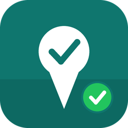

GPS check-ins, customer visits, monthly KPI targets and Telegram reports for outside sales teams.
Odoo 18 · Mobile-friendly · Google Maps · Telegram bot · PDF reports
CheckinMe turns Odoo into a mobile sales activity system. Salespeople check in at the customer from their phone, the position is captured by GPS and linked to Google Maps, managers are notified instantly on Telegram, and every visit feeds real-time KPI dashboards and daily, weekly, monthly and yearly performance reports.
One tap "Check In Now" captures the phone's position and accuracy. Each check-in is linked to Google Maps, the distance to the customer's geolocation is computed automatically and the visit is marked Verified On Site or Far From Customer. Check-out captures a second position and the visit duration. Optional photo proof.
Every visit or meeting is tied to a customer, a time and a location. Record the purpose, meeting notes, outcome (interested, order taken, follow-up needed...), follow-up date and sales amount. New customers are flagged automatically and quotations can be created directly from the visit.
Set monthly targets per salesperson: visits, new customers, orders and sales amount. Achievement is computed in real time from check-ins and confirmed sales orders, with progress bars and an on-track / at-risk / behind status compared to the elapsed share of the month.
Managers receive an instant Telegram message on every check-in and check-out, with the customer, the location check, a map pin and the photo. Daily, weekly and monthly activity reports are sent automatically to the managers' group, and any report can be sent on demand.
Daily, weekly, monthly and yearly results per employee: pivot and graph analysis of check-ins, verified visits, customers, new customers, orders and sales amounts, plus a printable PDF Sales Activity Report and a Visit Sheet for each check-in.
Single-column forms, big buttons and kanban cards designed for the Odoo mobile app and phone browsers. Works with the standard Odoo web client: no extra app to install.
Install the app, then give your users the CheckinMe / Salesperson or CheckinMe / Manager access right (Settings > Users). Each salesperson needs an employee record linked to their user; set the employee's Manager so that notifications reach the right person.
@BotFather,
send /newbot and follow the steps.
BotFather gives you the bot token (looks like 123456789:AAH...).
https://api.telegram.org/bot<TOKEN>/getUpdates
in a browser and read "chat": {"id": -1001234567890, ...}.
Group ids are negative numbers. For a personal chat id, message @userinfobot.
Open the Odoo mobile app (or the browser), tap CheckinMe > Check In Now, allow location access when asked. The GPS position is captured automatically; tap Capture GPS to refresh it and Open in Google Maps to verify it. Select the customer and the activity type, add a purpose or a photo, and save.
Write the meeting notes, pick the outcome, set a follow-up date and enter the sales amount. Salespeople with sales access can create a quotation for the customer straight from the check-in.
Tap Check Out when leaving: the check-out position and the visit duration are recorded and the manager is notified. Planned visits can be prepared in advance (CheckinMe > Planned Visits) and checked in with one tap on the day.
Targets & KPI shows each salesperson's month-to-date achievement as cards with progress bars. Reporting > Performance Analysis gives daily, weekly, monthly and yearly pivots and graphs; Activity Report prints the PDF or sends it to Telegram for any period.
| Group | What they can do |
|---|---|
| CheckinMe / Salesperson | Create check-ins for their own visits, see their own check-ins, targets and reports (and those of their direct reports). |
| CheckinMe / Manager | Everything: all check-ins, targets, activity types, Telegram settings and logs, sending reports. |